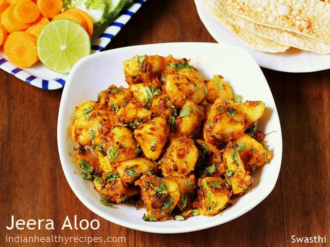

Aloo Jeera
Minimum Ingredients
- Boiled potatoes
- cumin seeds
- turmeric
Recipe
- Heat oil in a pan and add cumin seeds till they splutter.
- Add turmeric and diced boiled potatoes.
- Add salt and sauté for 4–5 minutes until golden and slightly crispy.

Aloo Jeera
Minimum Ingredients
- Boiled potatoes
- cumin seeds
- turmeric
Recipe
- Heat oil in a pan and add cumin seeds till they splutter.
- Add turmeric and diced boiled potatoes.
- Add salt and sauté for 4–5 minutes until golden and slightly crispy.
Vegetable Upma
Minimum Ingredients
- Rava
- mustard seeds
- mixed veggies
Recipe
- Roast rava lightly and keep aside.
- Heat oil, splutter mustard seeds, and sauté green chilies and chopped veggies.
- Add water, bring to boil, add rava slowly while stirring, and cook till thick.